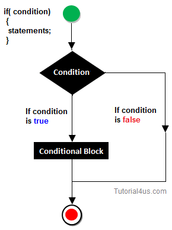
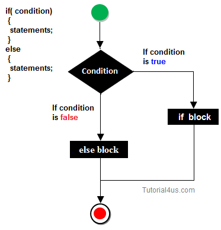
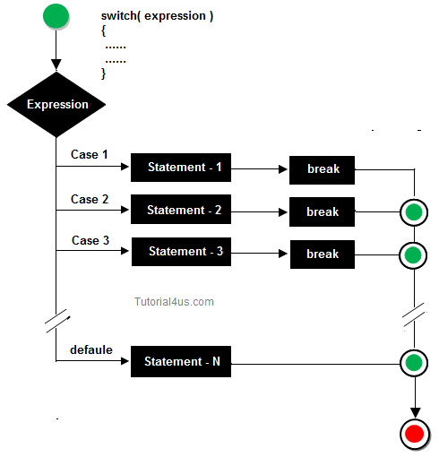

R- Control Statements
R programming provides three different types if statements that allows programmers to control their statements within source code. These are:
The 'if' statement is the simplest form of decision controlling statement for conditional execution. It tells to program to execute a certain part of code only if particular condition or test is true.

team_A <- 5 # Number of wickets scored by Team A
team_B <- 2 # Number of wickets scored by Team B
if (team_A > team_B){
print ("Team A wins")
}
result −
[1] "Team A wins"
If-else Statement
The 'if' statement is usually followed by an optional 'else' statement that gets executes when the Boolean expression becomes false. This statement is used when you will be having multiple statements with multiple conditions to be executed.

Example:
team_A <- 2 # Number of goals scored by Team A
team_B <- 8 # Number of goals scored by Team B
if (team_A > team_B){
print ("Team A will make the playoffs")
} else {
print ("Team B will make the playoffs")
}
Output:
[1] "Team B will make the playoffs"
The switch() function in R tests an expression against elements of a list. If the value evaluated from the expression matches item from the list, the corresponding value is returned.
switch (expression, list)
Here, the expression is evaluated and based on this value, the corresponding item in the list is returned.
If the value evaluated from the expression matches with more than one item of the list, switch() function returns the first matched item.

Example-1:
> switch(1,"learn","r","programming")
Output:-
[1] "learn"
> switch(3,"learn","r","programming")
Output:-
[1] "programming"
In the above example, "learn","r","programming" form a three item list.
The switch() function returns the corresponding item to the numeric value evaluated.
Note: If the numeric value is out of range (greater than the number of items in the list or smaller than 1), then, NULL is returned.
> x <- switch(0,"learn","r","programming")
> x
Output:-
NULL
> x <- switch(5,"learn","r","programming")
> x
Output:-
NULL
In this case, the matching named item’s value is returned.
> switch("color", "color" = "red", "shape" = "circle", "radius" = 8)
Output:-
[1] "red"
Here, "color" is a string which matches with the first item of the list. Hence, we are getting “red” as an output.
> switch("length", "color" = "red", "shape" = "circle", "radius" = 8)
Output:-
[1] 8
Similarly, "length" expression matches with the last item of the list. Hence, we are getting 8 as an output.